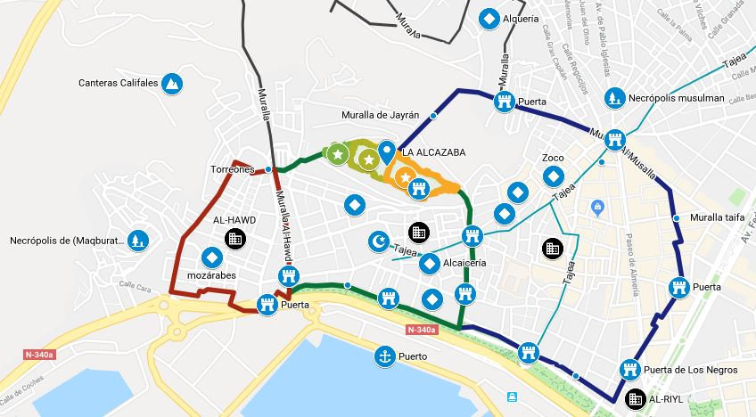

En esta pagina pretendemos facilitaros algunos documentos, fotogra y enlaces que pensamos que os pueden agradar y puede ayudar a saciar vuestra curiosidad acerca de nuestra querida tierra: Almería y su cada vez más reconozida Alcazaba
Revive la Alcazaba de Almería con los mapas de la segunda forrtaleza musulmana más grande de Europa y su ubicación en la Almería medieval de los siglos XI y XII. Descubre también los edificios mas emblemáticos de aquella época y localizalos dentro del mapa de la Almería actual.



A partir de los años 60 Almería se convirtió en un gran atractivo para la industria del cine. En spaghetti western y algunas superproducciones de Hollywood, se convirtieron en unos de los pilares económicos de la provincia. La existencia de parajes completamente desérticos, su almedina que conserva la esencia de cualquier medina de una ciudad del Magreb actual y su riqueza natural hicieron de esta cuidad y su entorno un gran plató de cine, que se sigue utilizando con bastante asiduidad en la Almería de hoy. La Alcazaba de Almería sugye sienndo un lugar privilegiado para el rodaje de escenas de películas, te mostramos a continuacion algunas de las más conocidas


La Finca Experimental La Hoya, antiguo Parque de rescate de la Fauno Subsahariana es una reserva de cría en cauticidad de fauna en peligro de extinción. Su principal objetivo entre otros es la cria en cautividad de cuatro especies de ungualados procedentes de norte de África en grave peligro de extinción que fueron rescatadas de su fin a principios de la década de 1960 y su posible reintroducción.
Hasta 25 firmas diferentes se han encontrado en la Alcazaba de 25 cabteris duferebtes. Estas narcas ke servían a los canteros para saber cuantas piedras eran suyas y para cobrar en consonancia
Almería se encuentra en una zona activa desde el punto de vista tectónico, aqui chocan la placa africana y la europea, lo que se traduuce con episodios de vulcanismo hace algunos millones de años y mvimiento sismicos que se producen cada cierto tiempo
En 1487 y 1522, se produjeron 2 grandes terremotos que destrozaron la Alcazaba de Almería, parte de la ciudad y el puerto, que marcaron el rumbo de la ciudad durante los siguientes siglos.